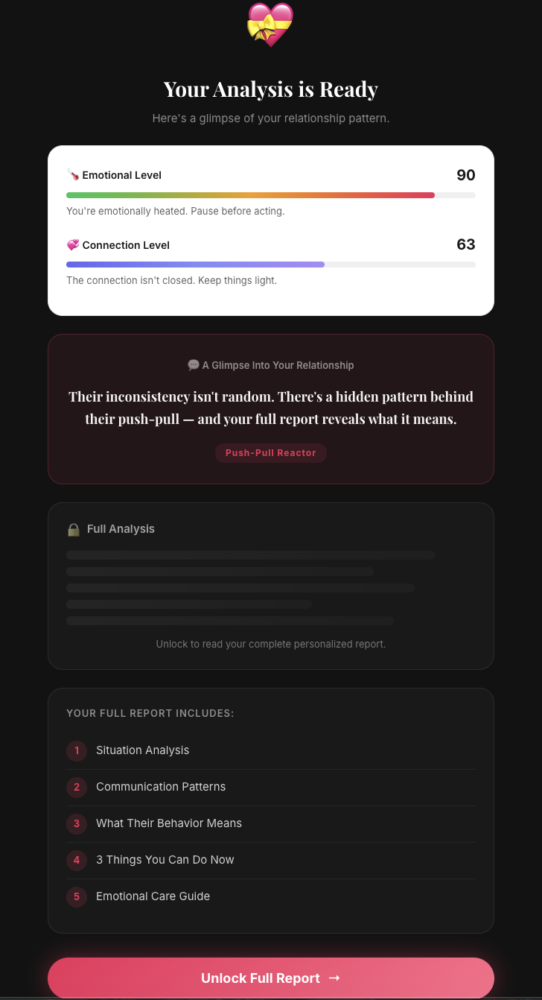

"사람들이 AI로 가장 많이 하는 건 연애 상담이다"라는 데이터에서 출발해, Claude Code로 아이디어부터 유료 서비스까지 단독으로 빌딩한 첫 번째 실험. 현재 전환 퍼널을 설계하고 가설을 검증하는 단계에 있습니다.
Harvard Business Review의 "How People Are Really Using Gen AI in 2025" 기사에 따르면, 생성형 AI의 사용 목적 1위는 심리 상담과 정서적 대화(Therapy & Companionship)로, 전체 사용의 약 31%를 차지합니다.
출발점: 사람들은 이미 ChatGPT에 연애 고민을 쏟아내고 있지만, 일회성 대화는 금방 잊힙니다. 이 수요를 전문 자료 기반의 체계적인 관계 패턴 분석 리포트로 전환하면 지속적이고 더 깊은 가치를 제공할 수 있다는 가설에서 시작했습니다.
OpenAI API를 연동해 심리학 전문 자료를 기반으로 관계 패턴을 분석하는 리포트를 설계했습니다. 단순한 챗봇 대화가 아니라, 사용자의 입력을 구조화된 프롬프트로 변환해 최대한 전문적이고 가치 있는 결과를 생성하는 데 집중했습니다.
이 결과물을 유료 서비스로 만들되, 처음부터 결제를 요구하면 진입 장벽이 높아질 것을 우려했습니다. 동시에 API 호출 비용을 최소화해야 했기 때문에, 두 가지 문제를 한 번에 해결하는 구조를 설계했습니다.
사용자가 입력을 완료하면 리포트의 핵심 요약(미리보기)을 무료로 보여줍니다. "이 정도 분석이라면 돈을 낼 만하겠다"는 확신을 결제 전에 제공해 진입 장벽을 낮췄습니다.
Polar 결제를 완료하면 전체 리포트를 열람할 수 있는 구조입니다. 미리보기 단계에서 이미 가치를 체감했기 때문에, 결제 전환의 심리적 허들을 줄일 수 있다는 가설입니다.
미리보기에는 경량 프롬프트를, 전문 리포트에는 전문 자료 기반 프롬프트를 분리 적용해 결제 전환이 일어나지 않는 사용자에 대한 API 비용을 최소화했습니다.

결제 직전 미리보기 화면 — 분석 요약을 먼저 보여준 뒤 전체 리포트 잠금 해제를 유도
Claude Code를 활용해 아이디어부터 배포까지 전 과정을 단독으로 구현했습니다. OpenAI API로 리포트를 생성하고, Supabase에 사용자 데이터와 결제 상태를 저장하며, Polar로 결제를 처리하고, Resend로 리포트 이메일을 발송하는 전체 파이프라인을 구축했습니다.
GA4와 Microsoft Clarity를 연동해 전환 퍼널(랜딩 → 입력 완료 → 미리보기 → 결제 → 리포트 열람)을 설계하고, 각 단계별 이탈률을 추적할 수 있는 데이터 기반을 마련했습니다.
페이지뷰가 아닌 퍼널 단계별 이탈 지점을 파악하기 위해 화면 진입·행동·결제·리포트 소비까지 커스텀 이벤트 30여 개를 직접 설계하고 코드에 심었습니다.
핵심 퍼널 이벤트
| 이벤트 | 발생 시점 |
|---|---|
begin_assessment | 시작 버튼 클릭 |
assessment_complete | 질문 입력 완료 |
preview_unlock_click | 미리보기 → 결제 버튼 클릭 |
purchase | 결제 완료 |
checkout_abandon | 결제 페이지 이탈 |
SCREEN VIEW
| 이벤트 | 설명 |
|---|---|
view_landing | 랜딩 페이지 진입 |
view_preview | 미리보기 화면 진입 |
view_payment | 결제 화면 진입 |
view_result | 결과 화면 진입 |
view_login / view_mypage / view_history | 기타 화면 진입 |
RESULT PAGE
| 이벤트 | 발생 시점 |
|---|---|
report_generated | 리포트 생성 완료 |
scroll_report_50 / scroll_report_100 | 리포트 스크롤 깊이 |
report_save_image / report_share / report_send_email | 리포트 공유·저장 |
AUTH & UX
| 이벤트 | 발생 시점 |
|---|---|
sign_up / login | 회원가입·로그인 |
exit_popup_shown / clicked / dismissed | Exit intent 팝업 퍼널 |
funnel_back | 질문 단계 뒤로 가기 (from → to) |
mini_demo_select / image_upload | UX 인터랙션 |
서비스 빌딩과 전환 퍼널 설계까지 완료된 상태이며, 다음 단계로 소셜 플랫폼(인스타그램, 틱톡 등)을 통해 트래픽을 유입시키고 실제 전환율 데이터를 수집해 가설을 검증할 예정입니다.
진입 장벽과 비용의 동시 해결
유료 서비스의 가장 큰 허들은 "돈을 내기 전에 가치를 알 수 없다"는 점이었습니다. 미리보기 구조는 사용자에게 가치를 먼저 보여주는 동시에, 전환이 일어나지 않는 경우의 API 비용을 줄이는 일석이조의 해결책이었습니다.
AI 코딩으로 실험 속도 높이기
Claude Code로 처음 제품을 빌딩하면서, 기획자가 직접 코드를 다룰 수 있을 때 아이디어와 실행 사이의 거리가 극적으로 줄어든다는 것을 체감했습니다. 가설을 세우고, 빠르게 만들고, 데이터로 검증하는 사이클을 혼자서도 돌릴 수 있다는 가능성을 확인한 실험입니다.
서비스와 전환 퍼널이 갖춰진 상태에서, 이제 실제 트래픽을 유입시켜 "미리보기가 결제 전환을 만드는가"라는 핵심 가설을 데이터로 검증하는 단계입니다.
인스타그램 릴스·틱톡·레딧 등에 연애 패턴 관련 숏폼 콘텐츠를 게시해 랜딩 페이지로 트래픽을 유입시킵니다.
GA4에 설계한 이벤트로 랜딩 → 입력 완료 → 미리보기 → 결제 각 단계의 전환율과 이탈 지점을 추적합니다.
이탈이 집중되는 구간을 식별하고, 카피·CTA·미리보기 노출 범위 등을 조정하며 전환율을 개선해 나갑니다.